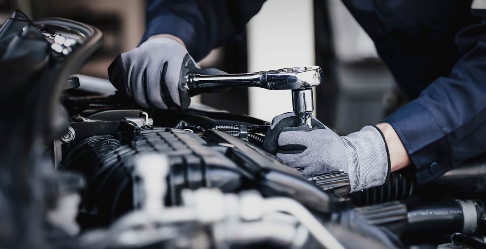

Home
prices of automotive costs
About automotive and the prices

CC by
Image Owner
Performing routine maintenance task,such as oil chnages tire rotations and brake inspections.
4 Fun fact of responsibilties often included
Diagnosing problesm using computerized diagnostic tools and manual testing methods ...
repairing or replacing defective parts and components. ...
keeping detailed records of services performed and parts used. ...
staying updated on lastes automotive technologies and repair techniques through traning and education . ...